These analyses are based on responses collected from 1928 caregivers between the dates of August 25, 2020 and September 24, 2020. These caregivers represent a range of voices: 9.02% are Black/African American, 15.72% are LatinX, (0.52% report being both Black/African American and LatinX,) and 24.69% live at or below 1.5 times the federal poverty line. Proportions/percentages are calculated based on the item-level response rates, not out of the total sample size. The data for these analyses are not weighted.
This composite was created by treating the 9 “concerns for children” variables as continuous and averageing responses across those items. The resulting index is a measure that ranges from 0 (Never concerned) to 3 (Concerned most of the time).
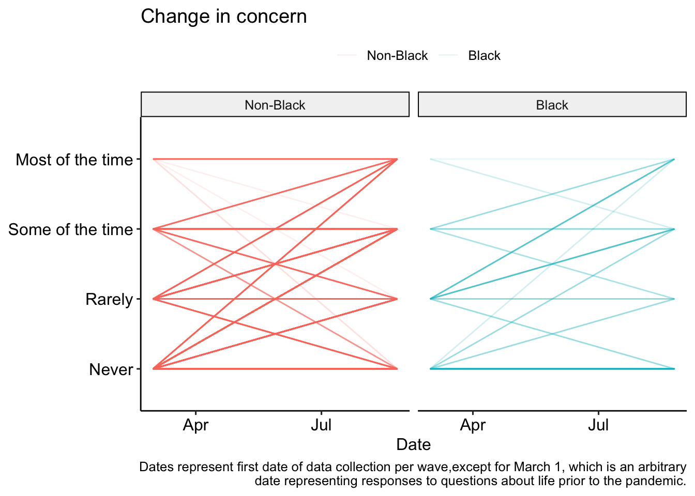
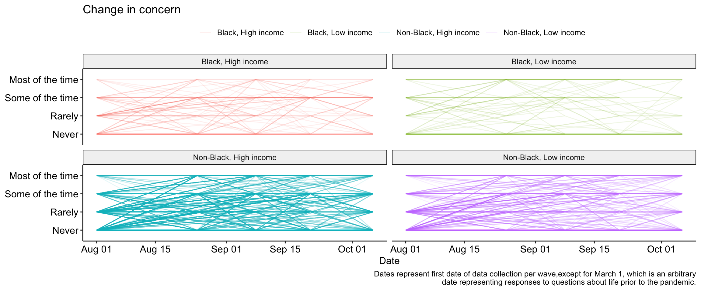
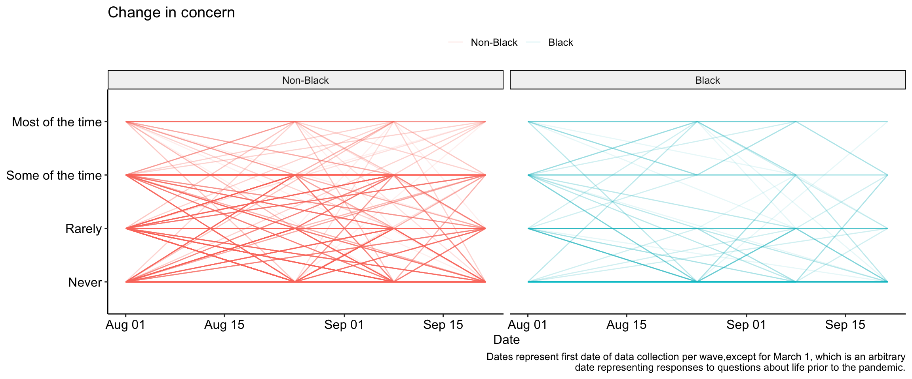
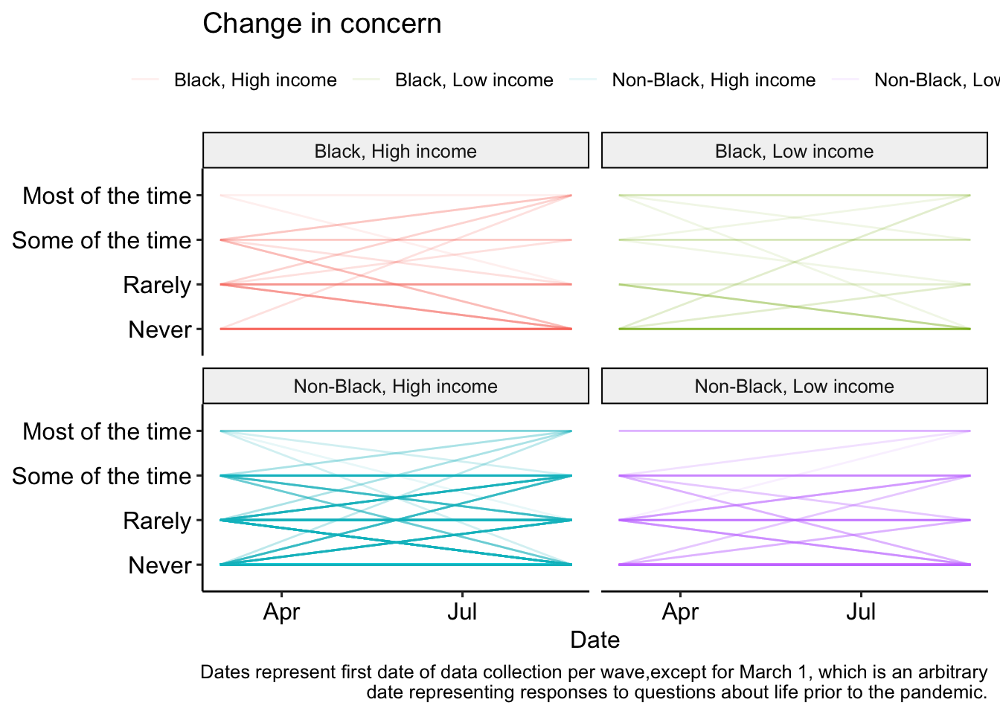
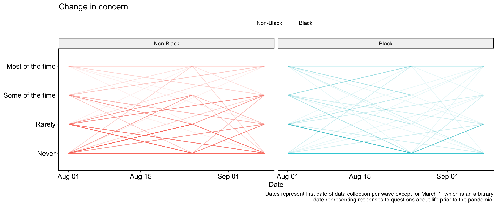
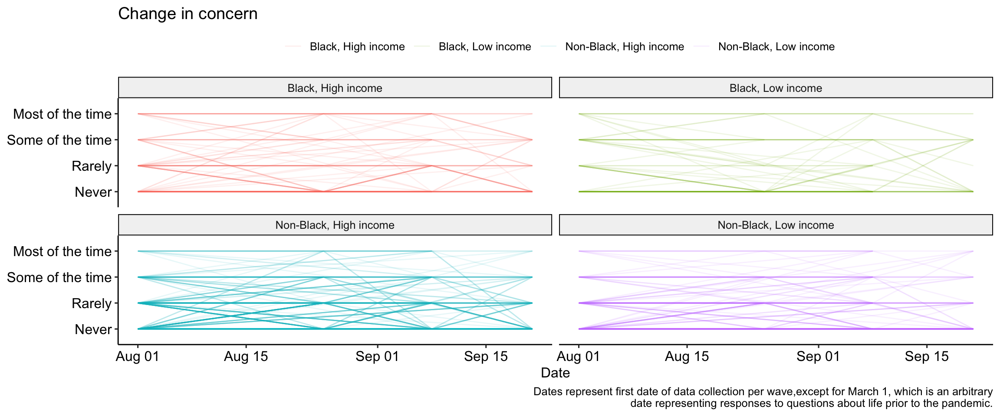
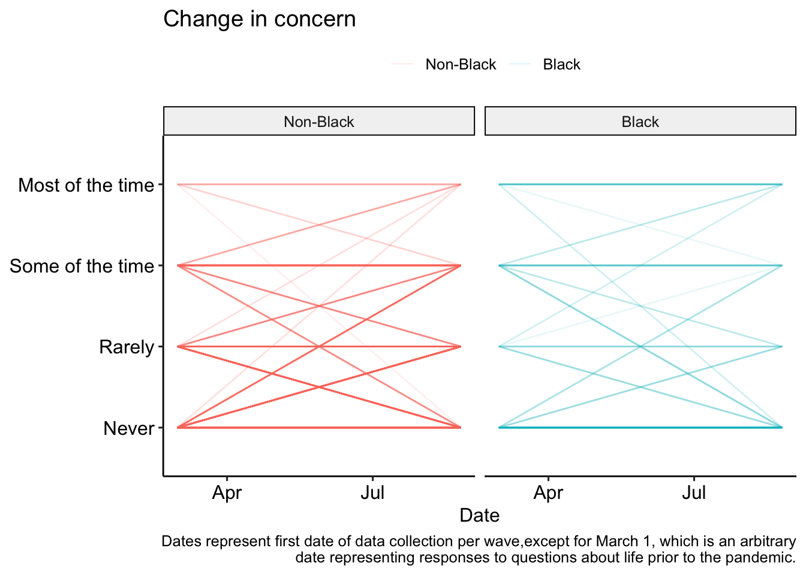
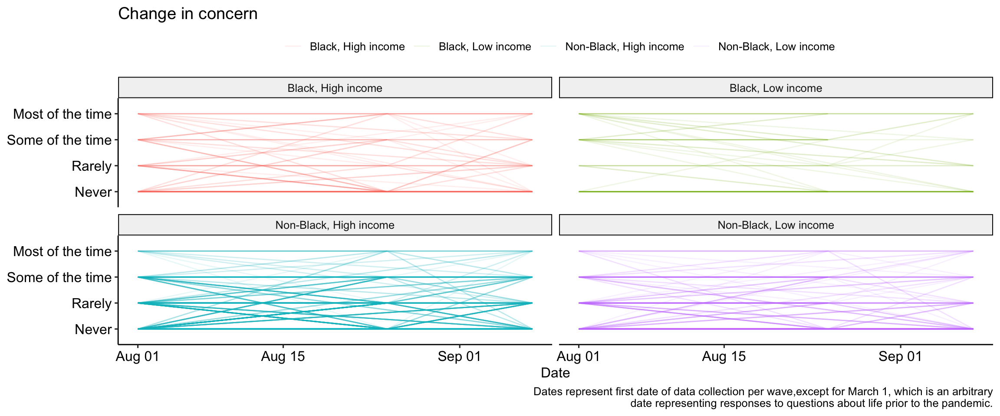
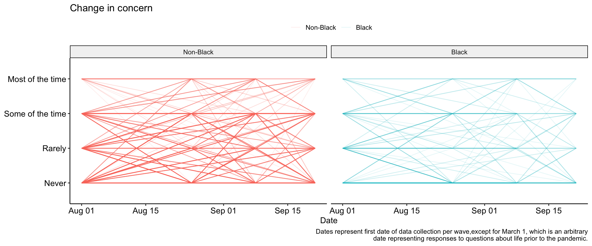
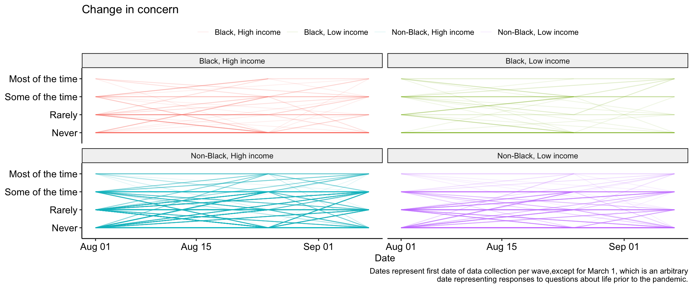
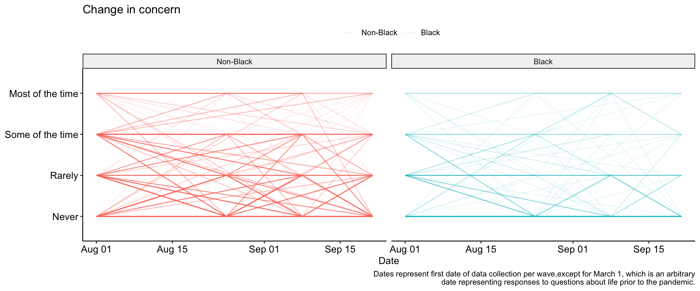
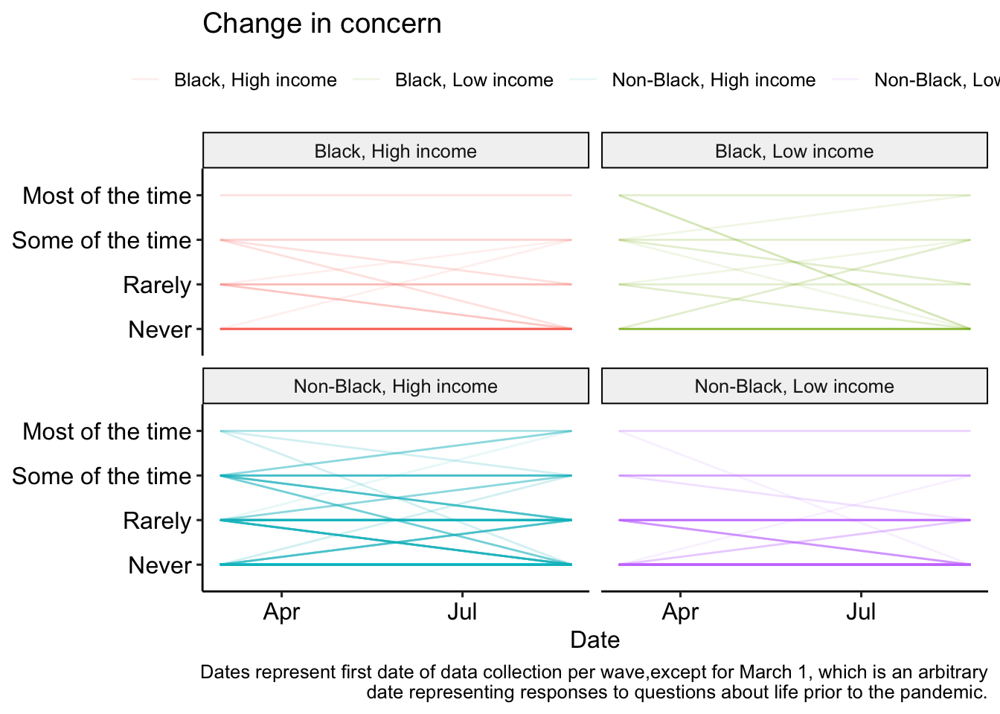
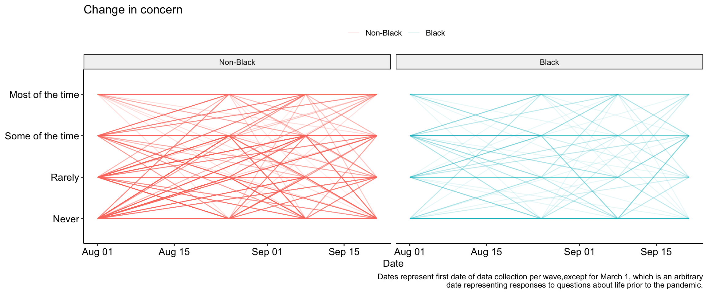
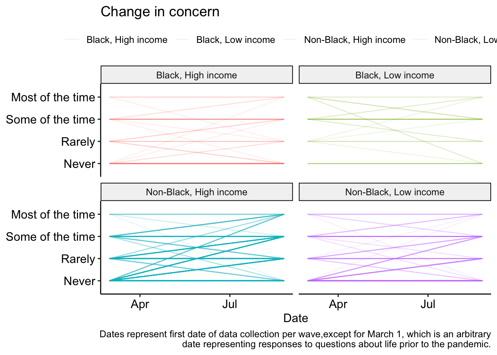
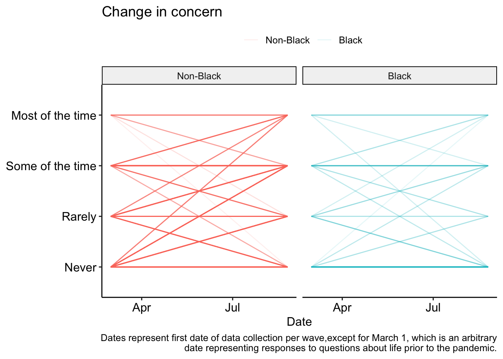
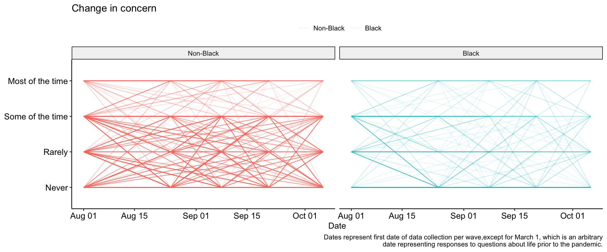
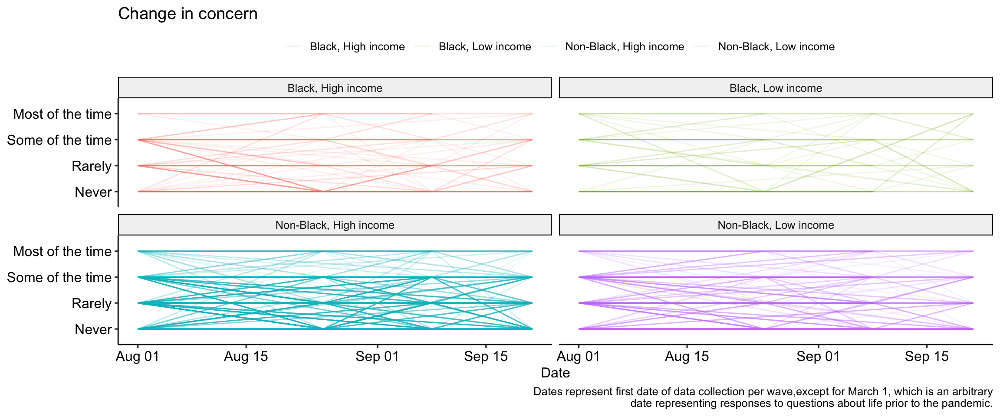
This composite was created by treating the 12 discrimination variables as continuous and averageing responses across those items. The resulting index is a measure that ranges from 0 (Endorsed no discrimination items) to 1 (Endorsed all discrimination items).